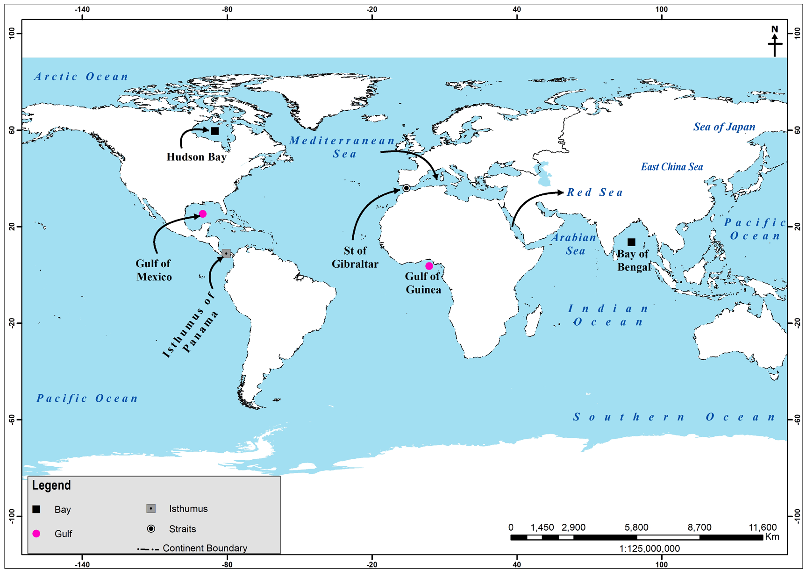

(Taiwan), and Makassar Strait (Indonesia).
A cape is a pointed or narrow extension of land entering into a body of water such as ocean, sea, lake or river. Examples of capes are the Cape of Good Hope in South Africa, Cape Horn in Chile, and Cape Leeuwin in Australia. Peninsula is a landmass that is almost surrounded by water but still connected to the mainland. It is large than a cape. Examples of peninsulas are Msasani in Tanzania, Arabian, Alaskan and Indo-China. Isthmus is a narrow land stretch that joins two major land masses. Examples of isthmus include the Isthmus of Panama between Nicaragua and Colombia and the Suez between Africa and Asia (Figure 4.2).

Figure 4.2: Map of the world showing gulfs, capes, peninsulas, isthmus and straitsActivity 4.4
 Activity 4.4
Activity 4.4Carefully study the world map in Figure 4.2 and do the following: